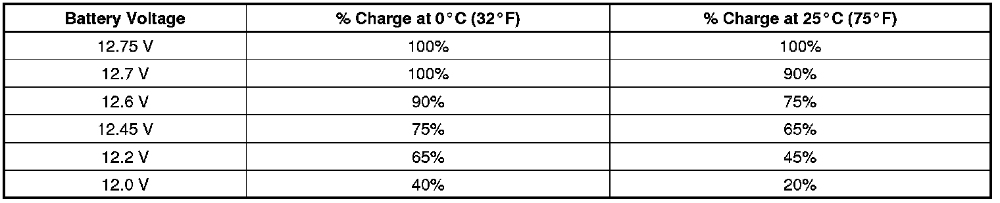

Battery Charging
Battery Charging
Special Tools
J 42000 Battery Tester
* For best results, use an automatic taper-rate battery charger with a voltage capability of 16 volts.
* The charging area should be well ventilated.
* Do not charge a battery that appears to be frozen. Allow the battery to warm to room temperature and test it using the J 42000 before charging.
Battery State of Charge
Important: Using voltage to determine the batteries state of charge (SOC) is only accurate after the battery has been at rest for 24 hours. This is enough time for the acid in each cell to equalize. If the battery has been charged or discharged in the past 24 hours, the battery SOC will only be an estimate.
The maintenance-free batteries SOC is estimated by reading the voltage of the battery across the battery terminals. Because the voltage is affected by current flow into or out of the battery, the engine must be stopped and all electrical loads turned OFF, including parasitic loads, when checking the voltage. The voltage can also be affected if the battery has just been charged or discharged, so it is important to consider what has happened to the battery in the time just before testing. Use the following procedure to determine the batteries SOC:
1. Be sure all electrical loads are turned OFF.
2. Determine whether the battery has been used in a vehicle or charged within the past 12 hours.
* If the answer is no, the terminal voltage will be stabilized and no action is necessary before reading the voltage. Skip to step 3.
* If the answer is yes, terminal voltage will not be stabilized and you should wait 12 hours since the last time the battery was used.
3. Estimate the battery temperature by determining the average temperature to which the battery has been exposed for the past 12 hours.
Important: The table is accurate to 10 percent only after the battery has been at rest for 12 hours.
4. Measure the battery voltage at the battery terminals. Refer to the following table to determine the SOC according to the estimated battery temperature:

Use the SOC information as follows:
* A battery with a SOC that is below 65 percent must always be recharged before returning it to service or continuing storage.
* A battery with a SOC that is 65 percent or greater is generally considered to be charged enough in order to be returned to normal service or in order to continue storage. However, if the battery is being used in slow traffic or with short drive times, or if the temperature is very hot or very cold, the battery should be fully charged, to at least 90 percent, before returning it to service or continuing storage.
Charging Time Required
The time required to charge a battery will vary depending upon the following factors:
* The battery charger capacity-The higher the charger amperage, the less time it will take to charge the battery.
* The SOC of the battery-A completely discharged battery requires more than twice as much charging time as a half charged battery. In a discharged battery with a voltage below 11 volts, the battery has a very high internal resistance and may only accept a very low current at first. Later, as the charging current causes the acid content to increase in the electrolyte, the charging current will increase. Extremely discharged batteries may not activate the reversed voltage protection in some chargers. Refer to the manufacturer's instructions for operating this circuitry.
* The temperature of the battery-The colder the battery is, the more time it takes to recharge the battery. The charging current accepted by a cold battery is very low at first. As the battery warms, the charging current will increase.
Charging Procedure
Notice: Turn OFF the ignition when connecting or disconnecting the battery cables, the battery charger or the jumper cables. Failure to do so may damage the ECM/PCM or other electronic components.
Notice: Refer to Fastener Notice .
When charging side-terminal batteries with the battery cables connected, connect the charger to the positive cable bolt and to a ground located away from the battery. When charging side-terminal batteries with the battery cables disconnected, install the battery side terminal adapters and connect the charger to the adapters.
Tighten the battery side terminal adapters to 15 N.m (11 lb ft).
Use the following procedure to charge the battery:
1. Turn OFF the charger.
2. Ensure that all of the battery terminal connections are clean and tight.
3. Connect the charger positive lead to the battery positive terminal on the battery or the remote jumper stud underhood.
Notice: Do not connect the negative charger lead to the housings of other vehicle electrical accessories or equipment. The action of the battery charger may damage such equipment.
4. Connect the negative charger lead to a solid engine ground or to a ground stud in the engine compartment that is connected directly to the battery negative terminal, but away from the battery. If the negative battery cable is disconnected and a terminal adapter is being used, connect directly to the adapter.
5. Turn ON the charger and set to the highest setting for normal charging.
6. Inspect the battery every half hour after starting the battery charger.
* Charge the battery until the taper-rate charger indicates that the battery is fully charged.
* Estimate the battery temperature by feeling the side of the battery. If it feels hot to the touch or its temperature is over 45°C (125°F), discontinue charging and allow the battery to cool before resuming charging.
7. After charging, test the battery. Refer to Battery Inspection/Test (Battery Inspection/Test) .